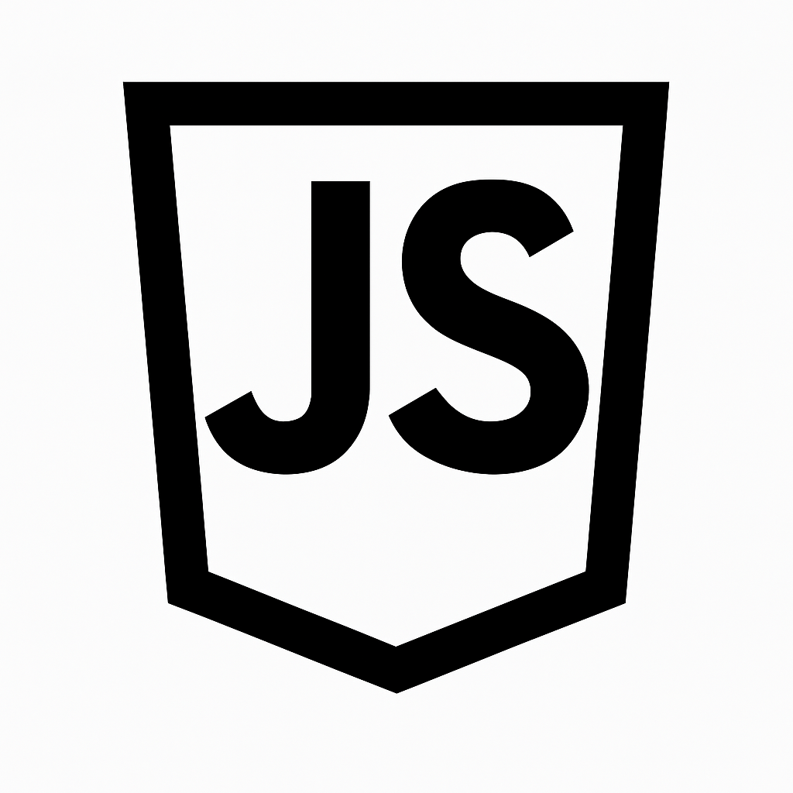

Semana 4

Descripción
Esta semana se introdujo JavaScript y TypeScript. Se estudiaron variables, operadores, funciones tradicionales, flecha y closures. Además, se abordó cómo manejar el DOM con JavaScript y cómo usar canvas para animaciones (MDN, JavaScript.info).
Ejercicios de laboratorio - Resultados
Se realizó una animación gráfica usando canvas. Se manipuló el DOM para cambiar elementos dinámicamente con JS puro.
Reflexión
¿Qué aprendí?: Las bases de la programación con JS y manipulación de elementos DOM.
¿Cómo aprendí?: Mediante teoría, laboratorio práctico y recursos de Mozilla.